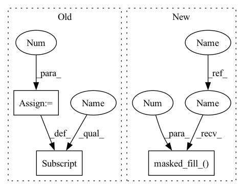

Pattern ID :37723

Before Change
c[ind2] *= -1
r = torch.max(t / w, (t - 1) / w).clamp(min=-1e12, max=1e12)
r[w.abs() < 1e-8] = 1e12
r[r == -1e12] *= -1
rs, indr = torch.sort(r, dim=1)
rs2 = F.pad(rs[:, 1:], (0, 1))
rs[rs == 1e12] = 0
After Change
w.mul_(ind2.unsqueeze(1))
c.mul_(ind2)
r = torch.max(t / w, (t - 1) / w).clamp(min=-1e12, max=1e12)
r.masked_fill_(w.abs() < 1e-8, 1e12)
r[r == -1e12] *= -1
rs, indr = torch.sort(r, dim=1)
rs2 = F.pad(rs[:, 1:], (0, 1))
rs.masked_fill_(rs == 1e12, 0)
In pattern: SUPERPATTERN
Frequency: 3
Non-data size: 3
Instances
Fragment ID: 108333149
Project Name: jeromerony/adversarial-library
Commit Name: 1f51f51770105e045bf985ab7553d5480efc4dbe
Time: 2020-11-26
Author: jerome.rony@gmail.com
File Name: adv_lib/attacks/fast_adaptive_boundary/projections.py
M Class Name: AnonimousClass
N Class Name: AnonimousClass
M Method Name: projection_l2(3)
N Method Name: projection_l2(3)
M Parent Class:
N Parent Class:
M File Name: adv_lib/attacks/fast_adaptive_boundary/projections.py
N File Name: adv_lib/attacks/fast_adaptive_boundary/projections.py
M Start Line: 282
M End Line: 305
N Start Line: 283
N End Line: 305
'>
Before Change
mask = (central <= bins[-2].item()).float()
// mask diagonal to 0 dist
diag = np.arange(shape[-2])
central = expand_dims_to(central, 3 - len(central.shape))
central[:, diag, diag] = 0.
// provide weights
if wide == "var":
dispersion = (distogram * (n_bins - central.unsqueeze(-1))**2).sum(dim=-1)
elif wide == "std":
After Change
// mask diagonal to 0 dist
diag_mask = torch.eye(shape[-2], device = device).bool()
diag = np.arange(shape[-2])
central = expand_dims_to(central, 3 - len(central.shape))
central.masked_fill_(diag_mask[None, ...], 0.)
// provide weights
if wide == "var":
dispersion = (distogram * (n_bins - central.unsqueeze(-1))**2).sum(dim=-1)
elif wide == "std":
'>
Fragment ID: 108333148
Project Name: lucidrains/alphafold2
Commit Name: 63fe134dfb8b6c6b8102def8b0486de0cfb18172
Time: 2021-03-01
Author: lucidrains@gmail.com
File Name: alphafold2_pytorch/utils.py
M Class Name: AnonimousClass
N Class Name: AnonimousClass
M Method Name: center_distogram_torch(5)
N Method Name: center_distogram_torch(5)
M Parent Class:
N Parent Class:
M File Name: alphafold2_pytorch/utils.py
N File Name: alphafold2_pytorch/utils.py
M Start Line: 297
M End Line: 299
N Start Line: 284
N End Line: 300
'>
Before Change
bkv_buckets = look_one_back(bkv_buckets)
// Dot-product attention.
dots = torch.einsum("bhie,bhje->bhij", bq, bk) * (bq.shape[-1] ** -0.5)
// Causal masking
if self.causal:
mask = bq_t[:, :, :, None] < bkv_t[:, :, None, :]
dots[mask] = float("-inf")
// Mask out attention to self except when no other targets are available.
self_mask = bq_t[:, :, :, None] == bkv_t[:, :, None, :]
dots[self_mask] = - 1e5
// Mask out attention to other hash buckets.
if not self._attend_across_buckets:
bucket_mask = bq_buckets[:, :, :, None] != bkv_buckets[:, :, None, :]
After Change
bkv_buckets = look_one_back(bkv_buckets)
// Dot-product attention.
dots = torch.einsum("bhie,bhje->bhij", bq, bk) * (bq.shape[-1] ** -0.5)
// Causal masking
if self.causal:
mask = bq_t[:, :, :, None] < bkv_t[:, :, None, :]
dots.masked_fill_(mask, float("-inf"))
// Mask out attention to self except when no other targets are available.
self_mask = bq_t[:, :, :, None] == bkv_t[:, :, None, :]
dots.masked_fill_(self_mask, - 1e5)
// Mask out attention to other hash buckets.
if not self._attend_across_buckets:
bucket_mask = bq_buckets[:, :, :, None] != bkv_buckets[:, :, None, :]
'>
Fragment ID: 108333150
Project Name: lucidrains/reformer-pytorch
Commit Name: fe17355980831aa6e34b10f6407c23d8750ad946
Time: 2020-01-17
Author: lucidrains@gmail.com
File Name: reformer_pytorch/reformer_pytorch.py
M Class Name: LSHAttention
N Class Name: LSHAttention
M Method Name: forward(3)
N Method Name: forward(3)
M Parent Class: nn.Module
N Parent Class: nn.Module
M File Name: reformer_pytorch/reformer_pytorch.py
N File Name: reformer_pytorch/reformer_pytorch.py
M Start Line: 211
M End Line: 225
N Start Line: 211
N End Line: 225
'>
Before Change
r[w.abs() < 1e-8] = 1e12
r[r == -1e12] *= -1
rs, indr = torch.sort(r, dim=1)
rs2 = F.pad(rs[:, 1:], (0, 1))
rs[rs == 1e12] = 0
rs2[rs2 == 1e12] = 0
w3s = (w ** 2).gather(1, indr)
w5 = w3s.sum(dim=1, keepdim=True)
ws = w5 - torch.cumsum(w3s, dim=1)
After Change
r.masked_fill_(w.abs() < 1e-8, 1e12)
r[r == -1e12] *= -1
rs, indr = torch.sort(r, dim=1)
rs2 = F.pad(rs[:, 1:], (0, 1))
rs.masked_fill_(rs == 1e12, 0)
rs2.masked_fill_(rs2 == 1e12, 0)
w3s = (w ** 2).gather(1, indr)
w5 = w3s.sum(dim=1, keepdim=True)
ws = w5 - torch.cumsum(w3s, dim=1)
'>
Fragment ID: 108333147
Project Name: jeromerony/adversarial-library
Commit Name: 1f51f51770105e045bf985ab7553d5480efc4dbe
Time: 2020-11-26
Author: jerome.rony@gmail.com
File Name: adv_lib/attacks/fast_adaptive_boundary/projections.py
M Class Name: AnonimousClass
N Class Name: AnonimousClass
M Method Name: projection_l2(3)
N Method Name: projection_l2(3)
M Parent Class:
N Parent Class:
M File Name: adv_lib/attacks/fast_adaptive_boundary/projections.py
N File Name: adv_lib/attacks/fast_adaptive_boundary/projections.py
M Start Line: 282
M End Line: 305
N Start Line: 283
N End Line: 305